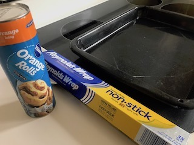
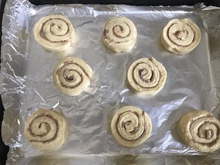
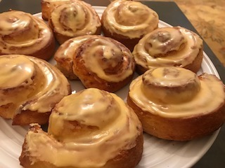

| Directions | Picture | |
|---|---|---|
| Step 1 | Turn the oven on to bake at 400degreesF |  |
| Step 2 | Place aluminon foil on the baking sheet | |
| Step 3 | Space out Cinnamon rolls about an inch or two apart on the foil |  |
| Step 4 | Place baking sheet in oven, when heated to 400degreesF | |
| Step 5 | Set the oven timer for 15-19 minutes, or until golden brown around edges | |
| Step 6 | After the timer has gone off or the cinnamon rolls are golden brown, it is time to safely take them out of the oven | |
| Step 7 | Place the baking sheet on top of the stove or a cooling rack and wait for the rolls to cool. While they are cooling, get the frosting and serving plate ready. | |
| Step 8 | Once the rolls have cooled off a little, ice each roll and place on your serving dish/plate |  |